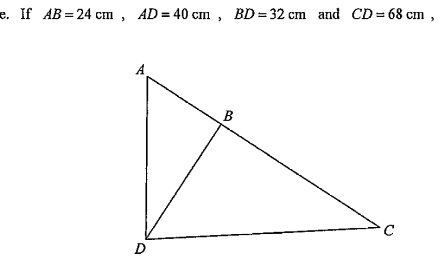

Question 16. In the figure, ABC is a straight line. If $AB = 24\text{ cm}$, $AD = 40\text{ cm}$, $BD = 32\text{ cm}$ and $CD = 68\text{ cm}$, then $BC =$

Question. In the figure, \(A\), \(B\), \(C\) lie on a straight line. \(AB=18\text{ cm}\), \(BD=24\text{ cm}\), \(AD=30\text{ cm}\) and \(CD=40\text{ cm}\). Find \(BC\). A. \(24\text{ cm}\) B. \(28\text{ cm}\) C. \(32\text{ cm}\) D. \(36\text{ cm}\) [1 mark]